正文: 遥想我100斤，那大概还是在初中年少无知的时候吧。 初三身高163。体重102。 可是初三就已经有人（基本都是小学同学们）说我胖了很多。因为上初中吃夜宵加上各种晚睡，再加上发育，初三胖了一些。
163. 102斤，嗯！应该算是很好了吧。
可是！！我没有hold住！！ 上了高中。开始各种夜宵，尤其高中基本坐教室一天，也不会运动。然后，我就，duang～duang～duang～ 高一开学168cm，107斤。然而，高一结束，我就一直狂飙120左右。 这里奉劝大家！！夜宵真的不能多吃啊，那时候母上大人爱我，晚自习之后给我送麻辣烫还有什么蒸饺或者烧烤，冬天还给我买一箱香飘飘奶茶让我晚上泡着喝，以至于冬天我就是这么过的！（哭～～） 你知道奶茶更容易发胖吗？！胖？！
那时候已经有人说我胖了，但我的内心是不承认的，我内心觉得自己还是初中那个100斤的少女。 直到有一天我在床上捏我自己的肉，我次奥，一抓一大把，我高一刚来的时候穿的衣服已经紧绷了！我蹭的一下炸毛了。 靠！我是胖了？！我居然这么胖了？！ 其实找到了一张我的大脸图，我是不会放上来供你们嘲笑的。—,—
后来高二的暑假，我和我闺蜜M一起减肥，大早上骑自行车，大概坚持了十来天（我很懒，很懒，一件事情坚持不了几天），之后就懒得动了，后来暑假称体重，120变成了114斤，身高从高一开始就一直没变过，一直168cm
前方高能预警！！高能！ 因为我要放照片了！！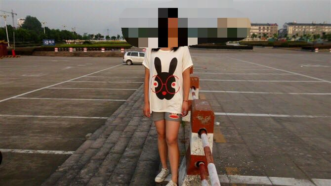图片那时候高二暑假，114斤，肩膀就好宽，那时候就已经麒麟臂了，就喜欢穿宽宽松松的蝙蝠衫。 ———后来我一个男生同桌奉劝我，胖子就不要穿蝙蝠衫了，那只适合瘦子，瘦子才能穿出宽松感觉更加显瘦，胖子只会更加显胖。（那时候我的内心是：我分分钟想砍死他！老娘胖吃你家大米了，穿你家布了？）
可是好景不长，高三开学没多久，我又胖回去了，继续我的120斤。谁说的高中能瘦？！你出来，我们好好聊聊。
OK。bilibili～我上大学了！
我上了大学，还是120，我老喊着减肥（已经从高中就开始喊了），可是我属于很懒而且管不住嘴，迈不开腿。再加上我又爱吃，大一整天和一群朋友们吃，基本一周至少三次火锅或烤肉，胃硬生生撑大了。饭量都比寝室的女生大，然后，就变成了一个虎背熊腰的大胖子。我的内心是崩溃的。
大一暑假和闺蜜A吃饭，
闺蜜A大概163cm，高中还110，上了大学之后体重变100。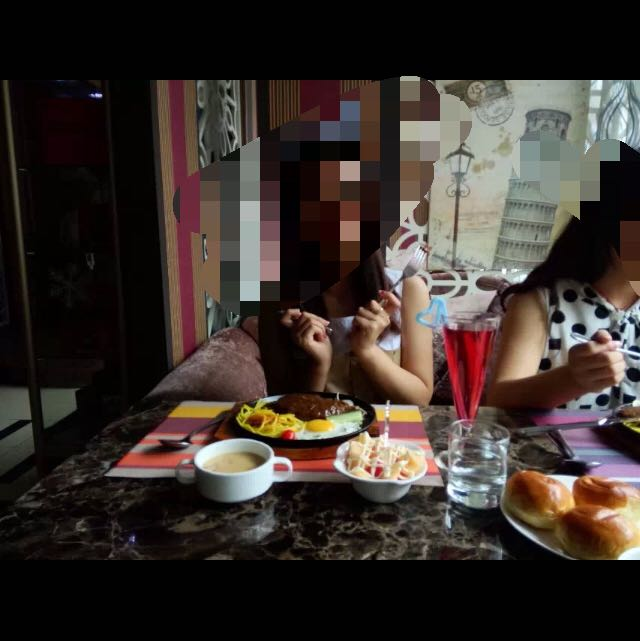显而易见，左边闺蜜，右边是我。（呵呵呵呵呵呵）我那发达的手臂是什么鬼？我想狗带。
大二的寒假，吃得多，储备能量，我竟然一度涨到了130。 然后那年回家过年，我是不快乐的。 爸爸开始嫌弃我胖，逢人就说，哎哟她都130了。然后亲戚们向我投来了惊讶的表情，呵呵呵呵呵呵呵。
那时候就和球一样，放上一张我的大粗腿，和母上大人的比较图！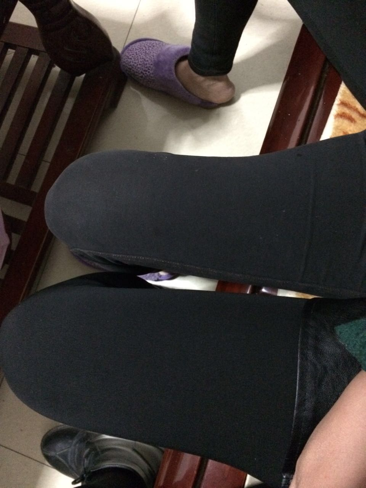
我亲姑妈很遗憾的对我说：你初中还是瘦的，高中那时候发育就该控制一下，那时候duang出来了之后，就再也瘦不回去了，我认识一个减肥机构，帮你制定合适你自己的饮食和锻炼，那个XX 都瘦了好多了。
——亲人都开始伤害我了。oh 麦噶！
冬天过了，大二下学期回学校之后，我一日三餐照常吃，已经不再经常吃自助烤肉火锅什么的了（那玩意真的得少吃，对身体一点都不好，而且胃真的会变大，变大！），体重慢慢的又回到了120到125。
我个人觉得，如果长期晚上吃很多，再加上夜宵什么的，体重会暴涨。但是如果我正常一日三餐，稍微晚上少吃一点，就算不运动但会偶尔拉伸（下面我会提到拉伸的重要），体重就会回到120～125。
哎～拿命吃起来的体重，但从120到100真难啊！没有一定的坚持和毅力是真的难！
突然！我暑假心血来潮要跑步减肥！也是因为看了太多知乎上跑步减肥成功的帖子，我心动了！
然后，我大二升大三的那个暑假就开始跑步，七月份 大概跑了六七次，跑完一定要压腿！一定要拉伸！（下面会讲拉伸）。无奈，后来学车再加上其他的，八月份之后就没跑了。
前面lz就说了自己很懒，坚持不了！也就是突发其想每次下定决定要减肥，就开始跑步，跳操。然并卵，坚持不了几天又开始大吃大喝。突然觉得自己这样，注定孤单！！
暑假结束回学校，体重早上起来空腹122这样子。（万幸万幸，一个暑假过去体重没什么大改变）
然后！lz又心血来潮要跑步了！
大三开学我开始跑步，每次我都会坚持跑一小时！因为都说四十分钟之后才开始燃脂。
——当然，刚开始你跑不动就别要求自己跑这么久，啊哈哈，并不是所有的人都像lz这么牛的。 好吧好吧，我又哈牛逼了。 其实～lz最开始也是跑半小时就不行了，后来，跑了一两次，我就能坚持跑一小时了，但我跑的很慢，基本八分钟一公里，因为跑得慢就能坚持久一点。
——每次我都要听歌，听bigbang节奏感强的歌，对跑步也有帮助。
上我人生中的第一个10公里图（lz从小跑步就好肺活量大，所以我跑了大概四五次，每次一小时，我现在就能跑十公里了。发现跑的次数多了，速度莫名其妙会提高，从最开始跑一小时八分钟一公里到现在六七分钟。有些人需要一个月，这都因人而异，反正千万不要受伤！！）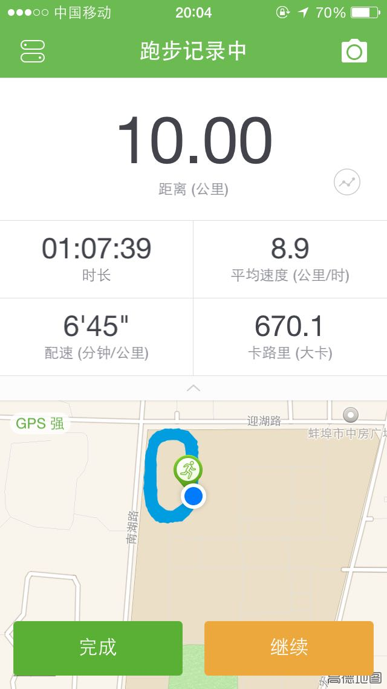
跑完一定要拉伸！跑完一定要拉伸！跑完一定要拉伸！本来已经120+”了，腿肯定粗了，你跑完不拉伸！是想要更粗吗？！是想要变成一个拥有肌肉腿的胖子吗？！
跑步其实挺有效，我隔一两天跑一次，跑了大概四五次，然后那几天早上空腹，一度降到了58.9！史上最轻！
可惜！！我又没坚持住！ 天气冷了，又懒得跑了，已经一个多月没跑了，体重早上起来又开始飙升,现在早上空腹称已经快62了。 我怎么可以这么懒，难怪胖子！
室友们都已经纷纷100以下，我的内心是崩溃的。她们的衣服都可以换着穿，我是绝对穿不了她们的衣服的。此处，手动再见！
天冷了，不想户外运动，我又有一颗减肥的心，我就开始在寝室瑜伽垫做运动，安利一个app。叫Keep。 前几天我随便选了一个课程做了两组动作，大概半小时。真的后背都是汗啊！最近来姨妈就休息不动了，但是会在瑜伽垫上做简单的拉伸。希望自己能坚持。哎哟喂，我都不信我自己了。我懒起来都怕了我自己了。
我次奥，感觉跑题了，跑远了！ 算了；跑就跑吧,那我就更加跑的远一些吧。
————————高潮来了，在这要给120的妹子们安利了。
既然120了，如果有妹子减肥失败好多次都减不回曾经的100（譬如我），但是心里又有一颗减肥的心，但又不想太累（还是譬如我）
—————那你就开始慢慢练你自己的身形吧，胖也要胖的匀称。尤其是小腿粗啊，腿没型的妹子一定要看！！
—————那你就慢慢揉你的脸吧，我跟你们讲啊，无论你的身材再瘦，只要你有个大圆脸，那么你给别人第一印象就是个胖子……我上对比照你们感受下。
所以！！我们胖妹们就更加需要脸瘦了！至少拍照的时候还可以假装一下是瘦子。
更加高潮！更加高潮！！！！！！！！下面我就要来讲瘦脸和拉伸练腿形的问题了，会有很多lz的照片！没办法！我就是小白鼠！！
————首先是拉伸！！！————
下面会有lz的亲身体验图！有图有真相！先来介绍怎么拉伸！先上一些网上拉伸图！
其实我168cm 120+斤。 上半身真的很难瘦，尤其手臂还有后背！ 我会坚持拉伸，但是一定要拉伸
随便找了几张图，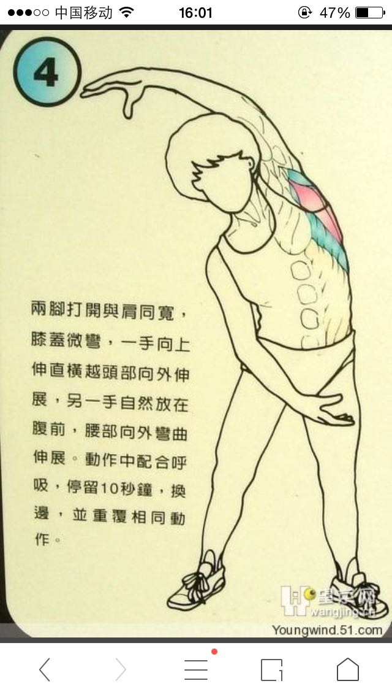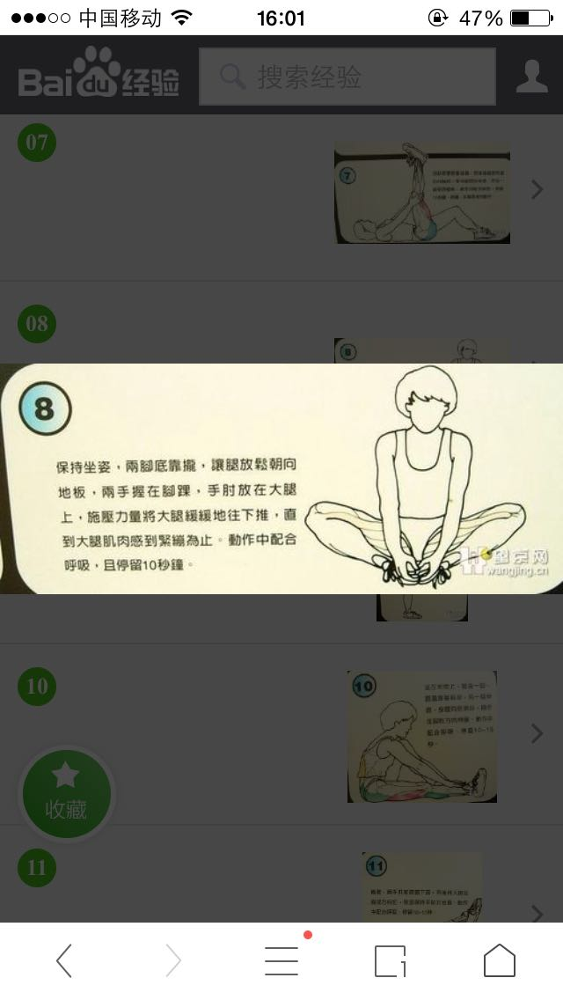就酱紫，是不是很简单，在寝室站着就可以坐的动作！在床上无聊也可以做的动作！！简单粗暴！
还有腿粗，没腿形的妹子一定要压腿！把腿随便翘在高一点多地方，身子慢慢往下压,可能会痛，有些妹子可能脑补不了。随便找了几个图片。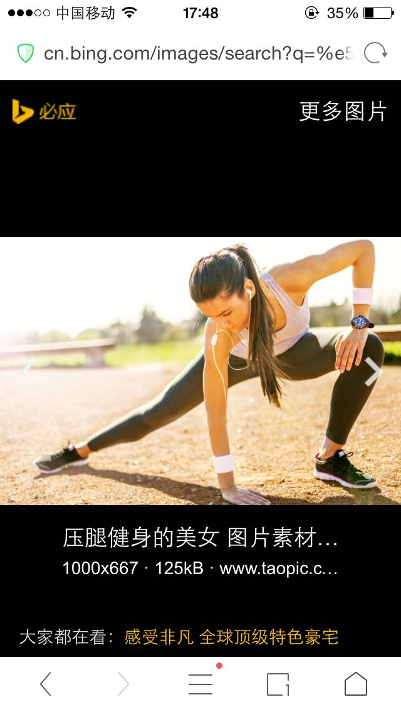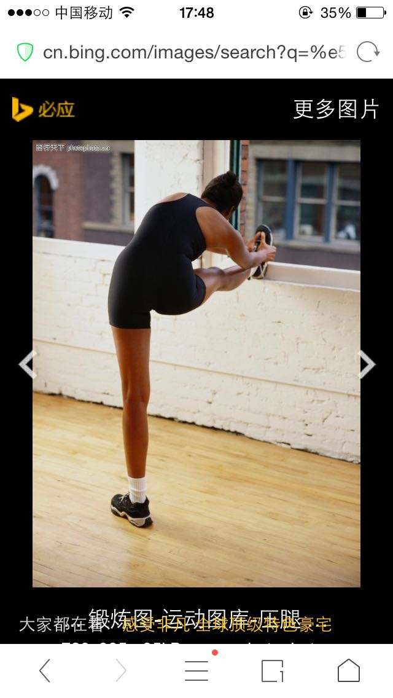
就这样！！要拉正面也要拉侧面的筋！
这些动作都很简单，也不累，拉侧面的筋不一定非要和图片一样蹲着，也可以站着，我觉得站着不累一点（我太懒了。哎哟喂） 。我会压腿配合着上半身的拉伸。
还有很多妹子肯定有小腿粗壮的烦恼。
告诉你，还是像上图那样压，感受到小腿那个劲都扯着的感觉。坚持！坚持！小腿肚都会提高，小腿肚提高了，小腿就好看了。
尤其一些柔韧性不好的妹子，但是这真的有用。 我压的久了，柔韧性也好多了，主要是腿有形状了！
不多说，上图， 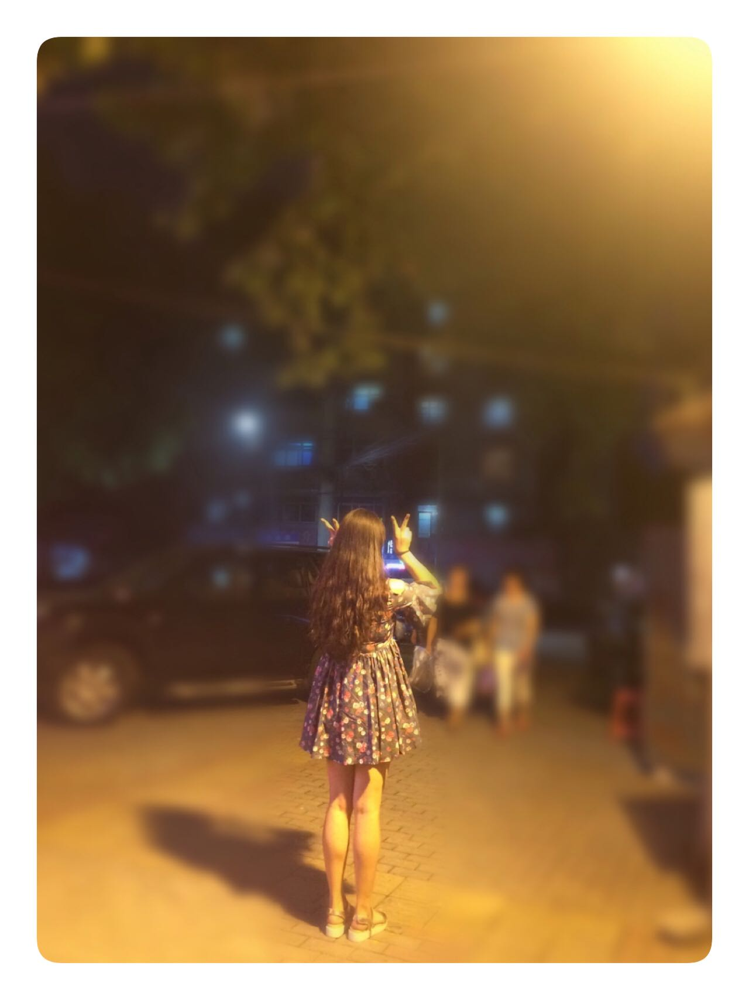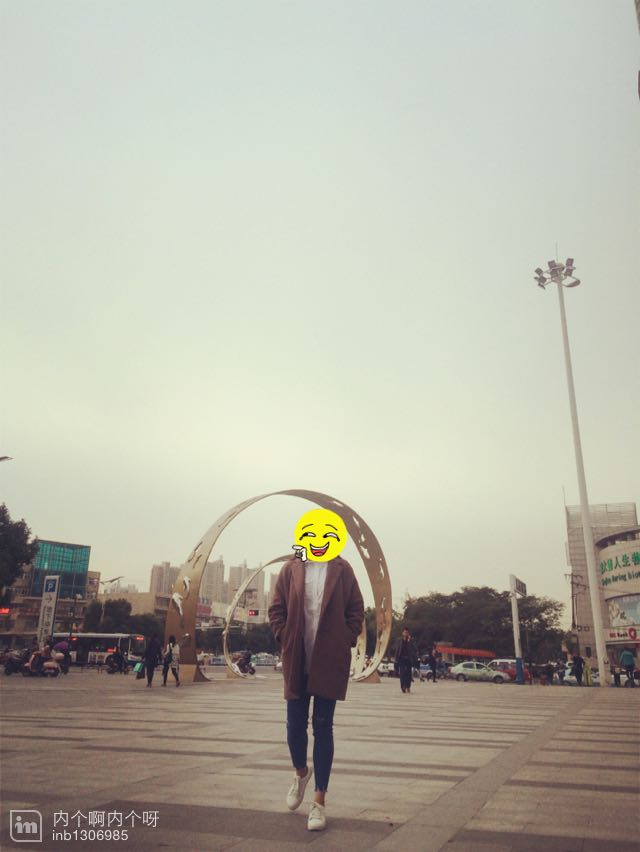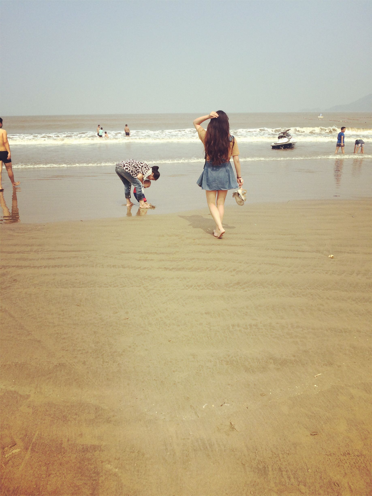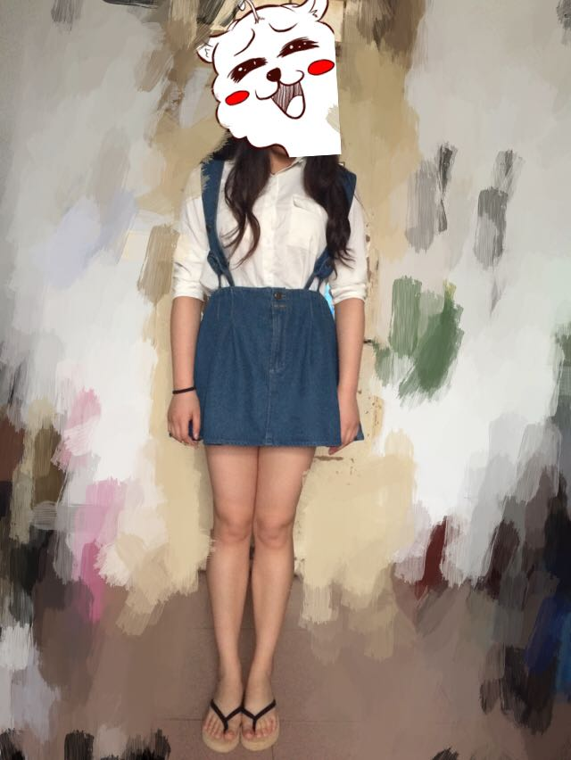
啊哈哈，小腿形状！腿形是不是出来了！！
还有！我拍照是不是很显高， 其实只有168cm
————啊哈哈，想要拍图显高显瘦，私下教你经验～
再来张侧面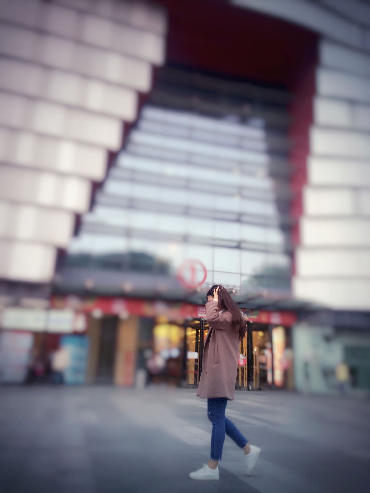
拉伸！拉伸！拉伸！！一定要！！我再强调！
————关于瘦脸！
好了！高能图来了！
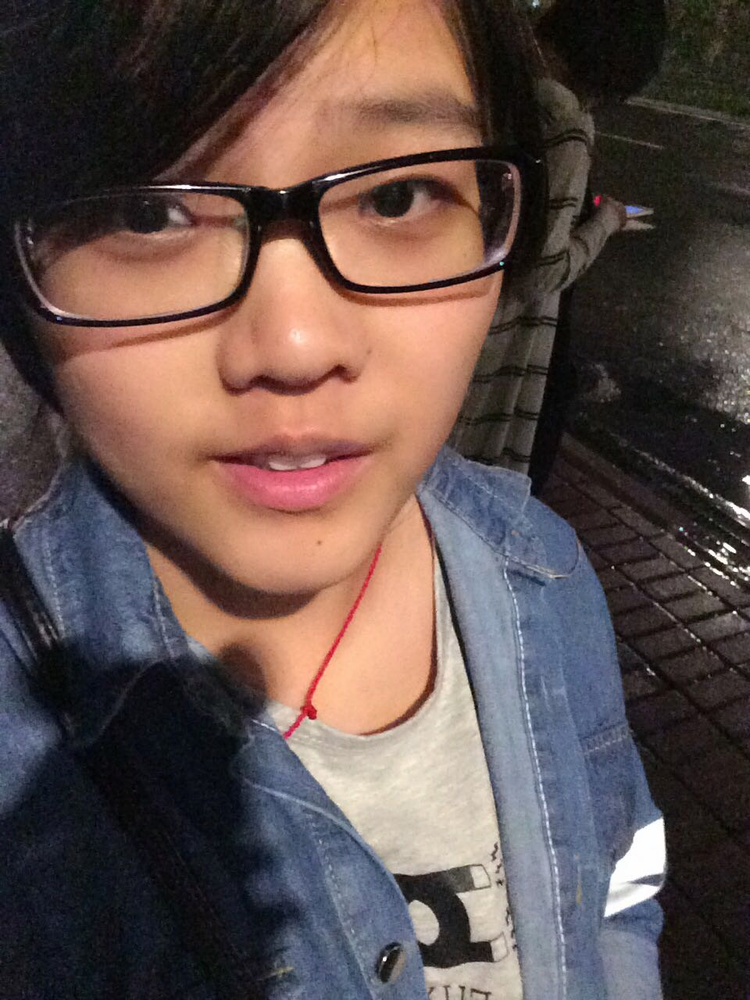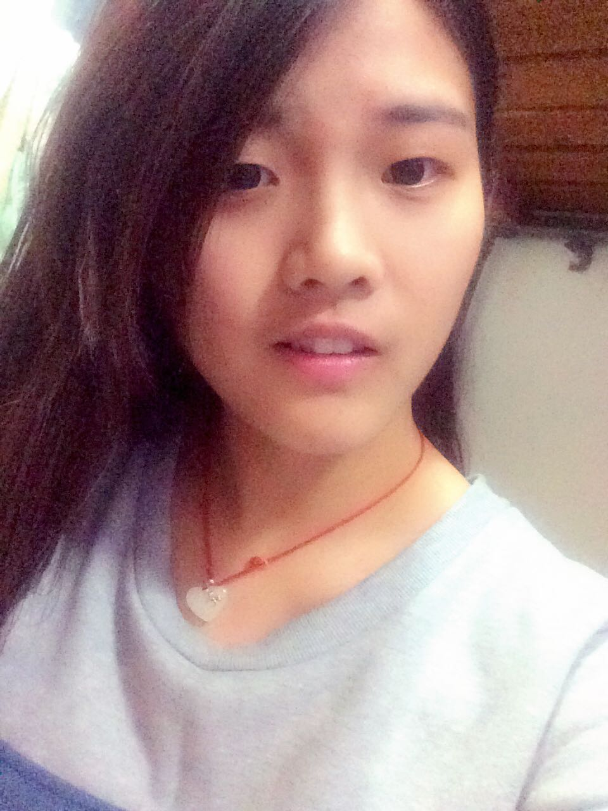
我真的！！120+斤！！
图没p！图一用的是美图秀秀的万能相机的原图拍的。图二是清凉特效拍的。
别喷lz长得抱歉！别喷！别喷！谢谢！！
大家都说！！光看我脸！！是想象不到我是一个虎背熊腰的大胖子的！大家说！我这脸！我应该是个瘦子的！！
哭ing～
下面来安利我 瘦脸的方法了！
1。没事就仰头！尽全力，仰到你最大的能力，无聊就这样，这样有助于减少双下巴。
2。推脸！ 网上有一个女的推脸特别强，放上链接http://jingyan.baidu.com/m/article/27fa7326d81cba46f9271f5b.html
她这里面有五招，我基本就用第一招，偶尔会做一下第二招。
我觉得最有用的就是下图这个了！！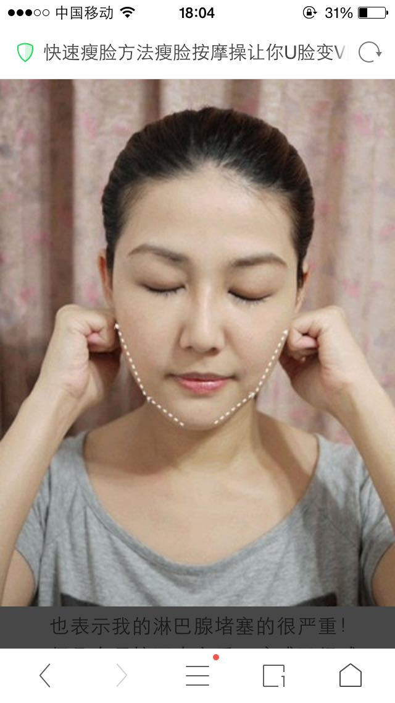
我做上图这个动作！！真的好痛啊！你们懂那种，感觉手揉在脸上发出咯噔咯噔的声音吗？！
我每次都无聊了，想起来做才做，切忌，一定要保证脸和手摩擦力要小，不然真是摩擦的生疼啊！！
反正坚持吧！！
最近我看了很多知乎用户发捏两眼中间的肉能高山根，我也在尝试，看图二，是感觉有一些用，我真的是属于没山根的那种人！
我看看我能不能长期坚持，如果真的有效，我再来上对比图！
我以上安利的动作都不难。懒妹子可以没事的时候做做。
对了！ 有一头长卷发！很重要，其实我肩膀很宽很厚，但是长发能遮住我一身熊彪
还有！拍照技术也很重要！！角度啊！后期的调色啊什么的。
上图！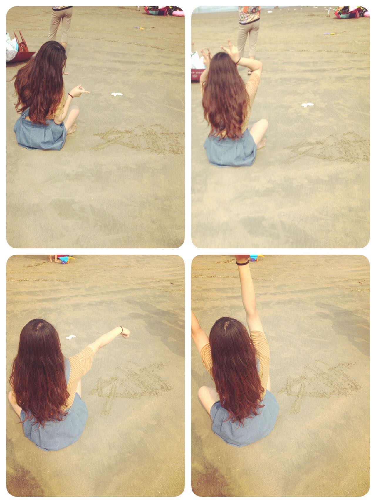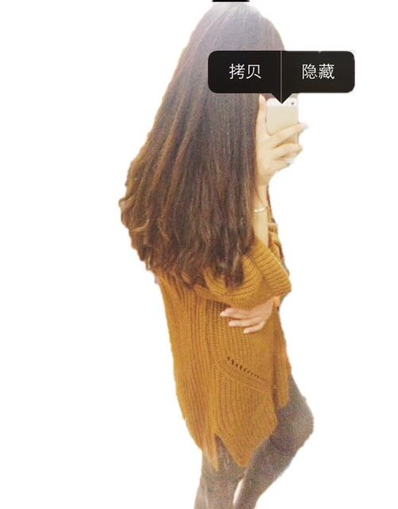
lz120+斤，但我每次发照片，大家都说瘦了，其实并没有，只是我的拍照角度选的好！
如果还有什么不懂的！可以私信我！！
手机码字，很累， 32万个赞，OK？！
2015-11-09
————新手不会分割线，勉强分————
又想开始减肥了。
其实我就很想控制体重别再和去年一样暴涨到130了！！
冬天，当我体重控制不变，大家都上涨的时候， 变态的说明我还是瘦了！！嗯，就遵循这个理。
因为最近要考试，就晚上临睡前花点时间在寝室做做运动。平时控制饮食，不吃夜宵（我昨天没忍住，光棍节和同为单身狗的室友去小吃街狂吃街边小吃）。我都会吃晚饭，尽量早点吃，那样还有时间可以消化。因为你本来就知道自己晚上肯定会饿（譬如我），那就早点 五六点就可以吃了， 别等到七八点实在饿得不行才吃，那样都没时间消化，活该胖子！！ 我现在中午都只吃学校食堂三毛饭了！！！
今早空腹59.2。哎哟喂，终于在120以下了，激动激动。 感觉之前跑步，小腿肚子那明显的肌肉了，我有点惆怅的，最近开始玩手机的同时另一只手就按摩小腿肌肉，希望能小一点。 哎哟～不知道管不管用，对此有经验的妹子请私信我或评论告诉我经验好吗？！在线等，挺急的。。
冬天在寝室做运动，还是比较酷的！毕竟寝室冷，做一会儿运动会暖和一点。
看评论，发现好多妹子的身高体重都属于我这个阶段。 120。168。 其实挺尴尬的，说很胖也算不上，说瘦也不瘦。 但是突然想瘦到110或100又好难，尤其冬天！冷啊.！想跑步，外面太冷！根本窝在寝室一点都不想出门！！
我要开始我的寝室减肥之旅， 先试验几天，有效果就来上经验。
我觉得我的经验可能稍微适合 和我现在情况比较像的妹子，说瘦不瘦说胖不胖。
先上张照，今天去健身房考察行情（毕竟山里人，还没去健身房锻炼过，看到好多知乎用户发减肥成功都有健身房的功劳，我也心动了。最近忙，可能之后就要尝试一把）
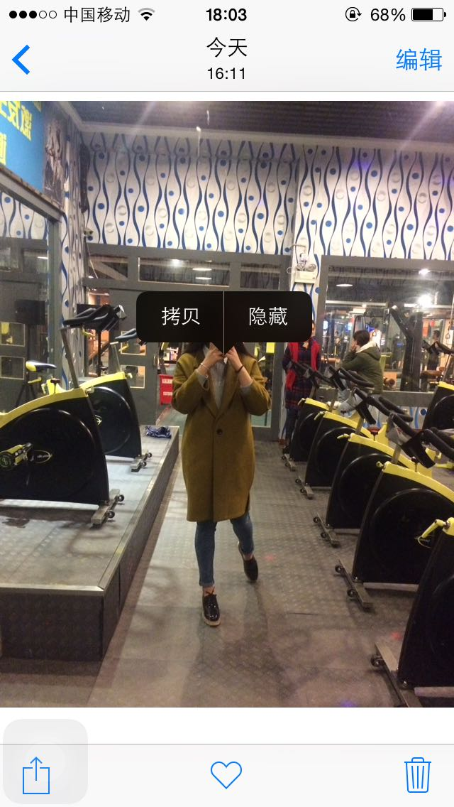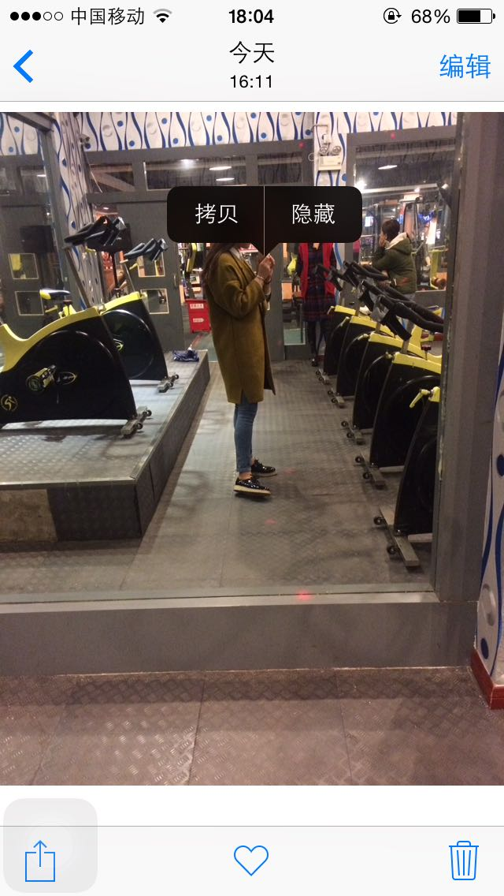明显的 小腿肌肉duang出来，照片传上来有点模糊，不造为什么。 记录下我此刻， 之后再更～～
等我这几天坚持锻炼（在寝室看keep 跟着锻炼，拉伸），等我瘦了一点再更～～